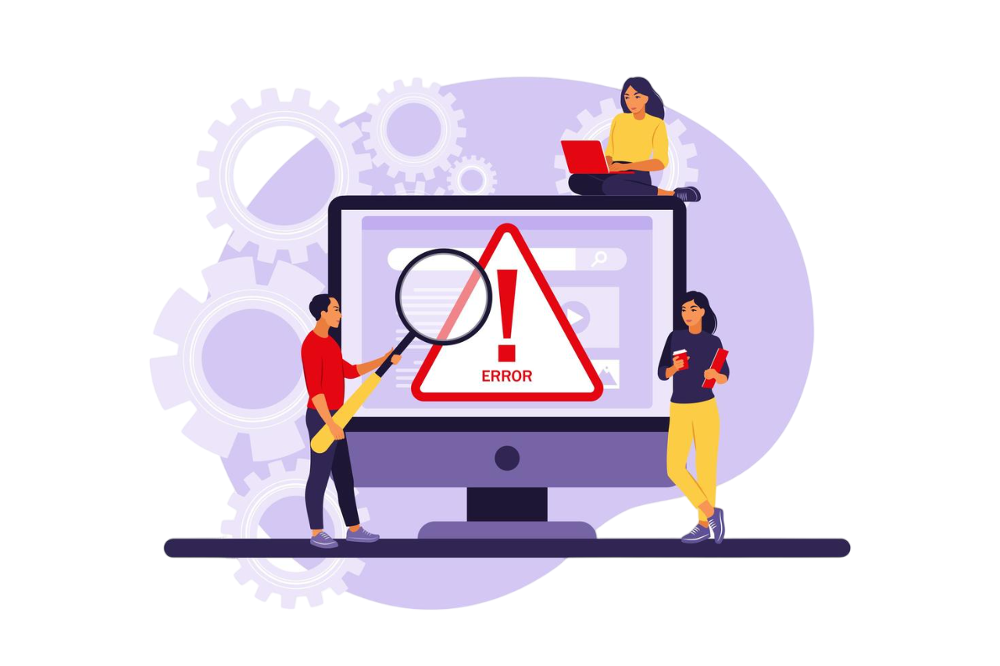
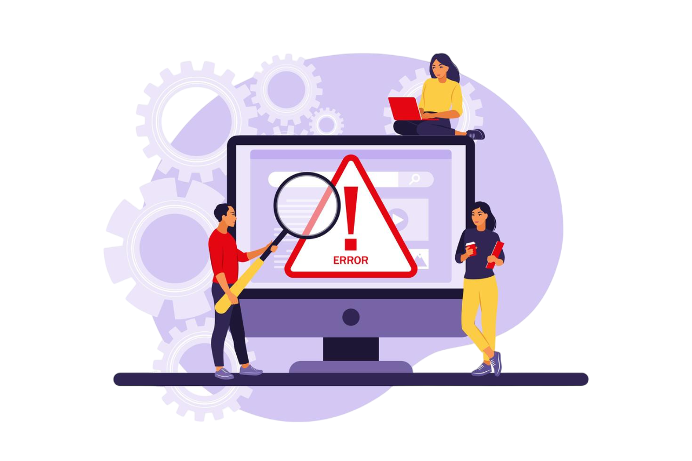

Nós não apenas monitoramos um computador, garantimos sua segurança.
Otimize a automatização de seus trens e evite acidentes.
Como uma startup recém-estabelecida em Fevereiro de 2024, estamos comprometidos não apenas em fornecer serviços excepcionais, mas também em defender três princípios fundamentais nos quais acreditamos firmemente
Confiança
Acreditamos que a confiança é a base de qualquer relacionamento sólido com nossos clientes.
Qualidade
Buscamos a excelência em nossos serviços e soluções, garantindo que nosso trabalho atenda aos mais altos padrões de qualidade.
Ética
Acreditamos que é nossa responsabilidade conduzir nossos negócios com integridade, transparência e respeito as interações com nossos clientes.
É comum a presença de falhas de serviços em diversas áreas, graças a falta de monitoramento dos hardware. A falta dessa monitoria na área metroferroviária, tem um impacto ainda maior por se tratar de um serviço público, ultilizado por muitas pessoas.
 

Falha Técnica
Garantimos a disponibilidade, o desempenho e segurança dos sistemas de hardware dos computadores, otimizando o retorno financeiro reduzindo o tempo de inatividade não planejado do serviço.
CPU
Causa inconsistência e falhas no processamento, resultando em baixo desempenho do sistema e travamentos frequentes.Disco
Pode causar falhas na leitura e gravação de dados, levando à perda de arquivos e problemas no sistema operacional.
Memória RAM
Podem resultar em instabilidade do sistema, falhas de programas e travamentos devido a problemas na leitura ou escrita de dados.
Dispositivos USB
A ausência de monitoramento de dispositivos USB pode resultar na introdução de malware e vazamento de dados confidenciais.